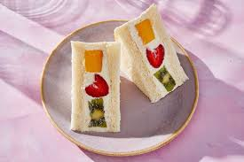
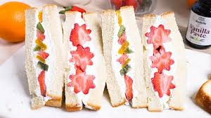

Ingredientes:
- Frutas como fresas, kiwi, durazno, mandarina, banana, etc.
- Crema batida
- Pan blanco
- Cortadores de galleta
- Cuchillo
- Papel film

Preparación paso a paso:
- Lavar, pelar y cortar las frutas en pequeños trozos y podemos darle forma con la ayuda de los cortadores de galleta, quedaran con forma de estrella, corazon o flores.
- Luego tomaremos una rebanada del Pan blanco y untaremos la crema encima con ayuda del cuchillo y encima le pondremos las frutas pequeños trozos de fruta con formas.
- Volveremos a hacer lo mismo que la anterior y untaremos crema en la otra rebanada de pan, lo pondremos encima de las frutas y quedara como un Sandwich.
- Despues de hacer algunos Sandwich mas vamos a envolver los Sandwiches con papel film y lo llevaremos al refrigerador durante 1 hora.
- Pasando una hora, sacaremos los Sandwiches del refrigerador y le quitaremos el papel film y con el cuchillo cortaremos en forma diagonal y se veran los trozos de fruta con formas.